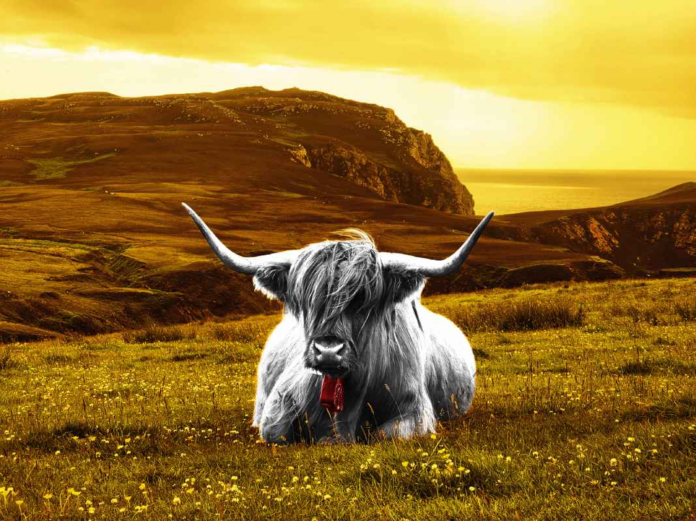
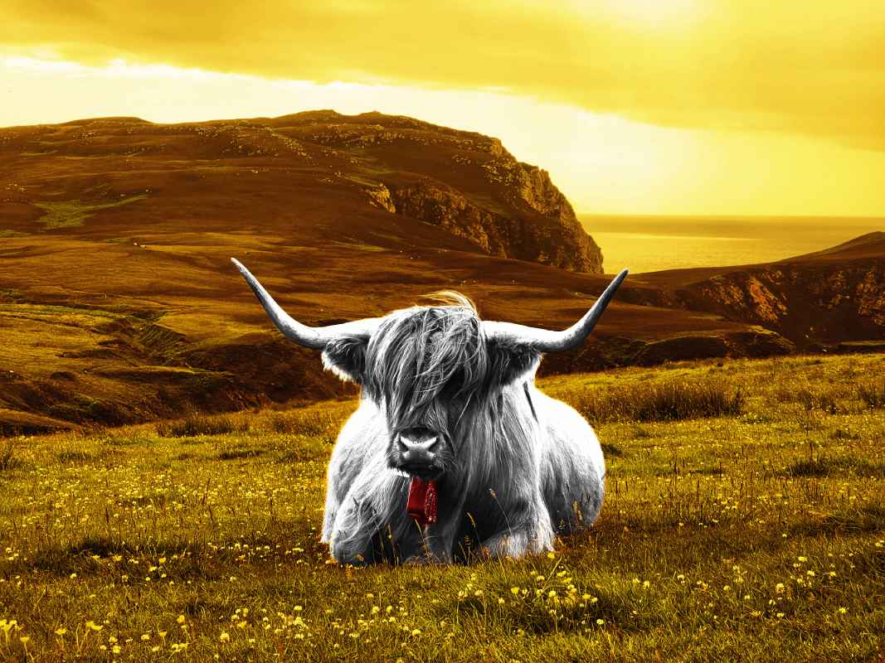

Bildredigering
Bildserie005
Bilden har först omvandlats till svartvit och den svarta färgen på pälsen justerats i syfte att ta fram en skarp svart och vit päls, men också för att kunna färga ögonen med en livlig grön färg via ett grönt overlay-lager. Ett extra lila filterlager har lagts över bakgrunden och kattsilhuetten kopierats för att skapa skuggeffekten. Också kuddarna har tagits bort från bilden. Sist har kontrasten, ljusbalansen samt färgmättnaden anpassats efter den konstnärliga visionen som är abstrakt, färgstark och överdriven.
 

Bildserie010
Öronmärkena på boskapet har tagits bort och ett gult filterlager lagts över bakgrunden. Boskapsilhuetten har omvandlats till svartvit i syfte att lyfta upp en ren vit färg på boskapet och för att kunna färga koskällan för hand med ett skarpt rött overlay-lager. Precis som i förra bilden har kontrast, färgmättnad och ljusbalans justerats för att framhäva den abstrakta, färstarka och överdrivna stilen.
Bildserie012
Hundens ögon har färgats för hand med ett skarpt blått overlay-lager och ett grönt färglager har lagts över bakgrunden. Kontrast, ljusbalans och färgmättnad har korrigerats för att matcha den konstnärliga visionen.